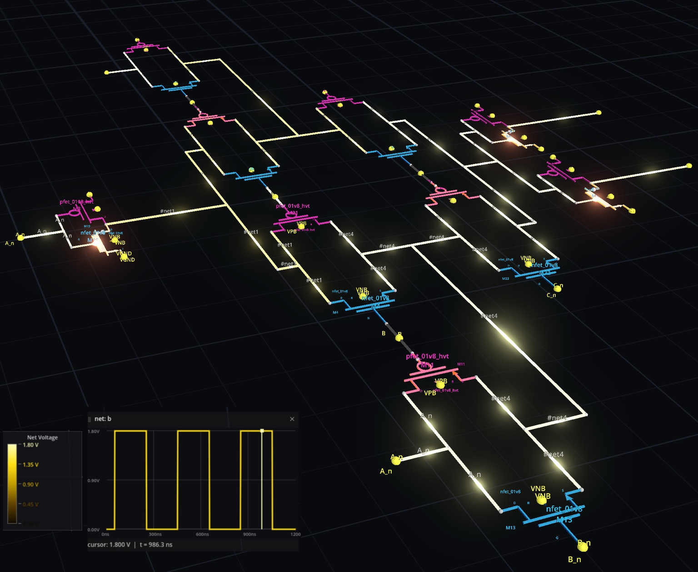
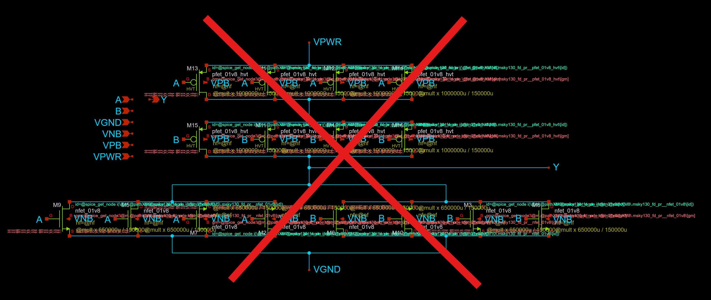
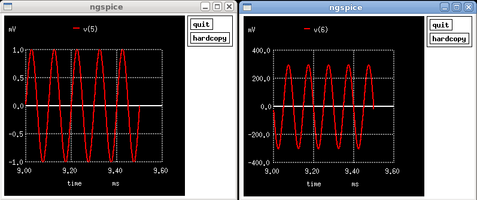
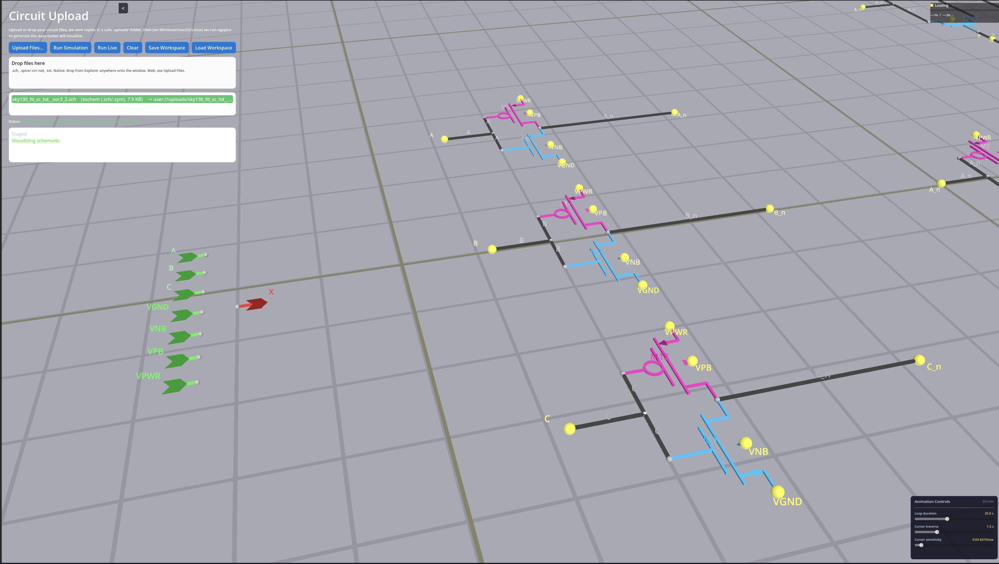
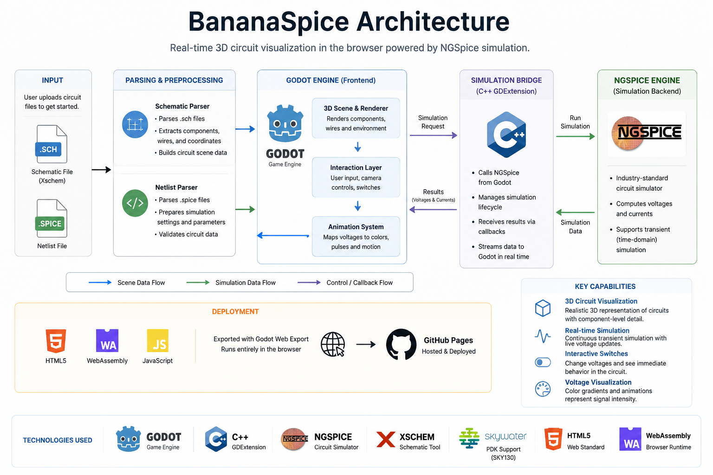
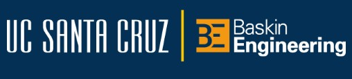
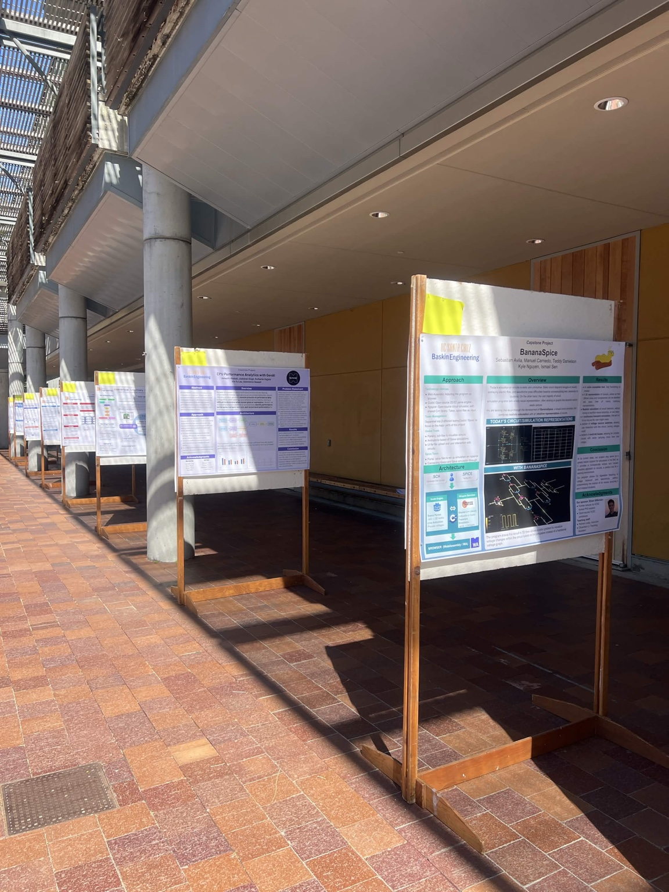
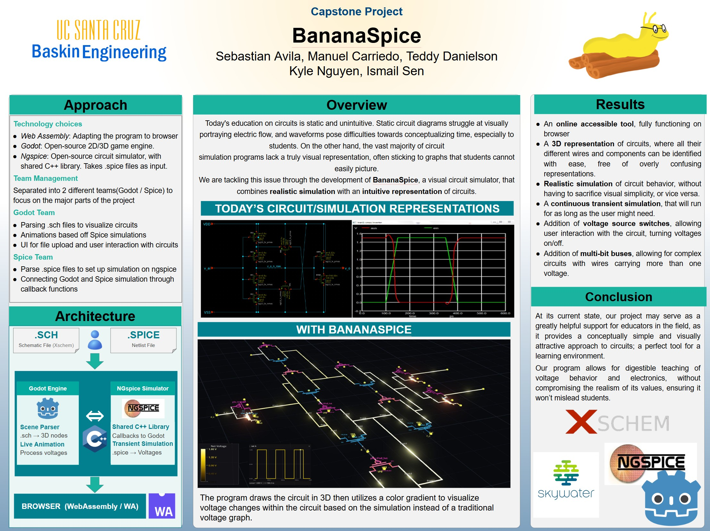

BananaSpice
A browser-based visualization layer that combines Xschem circuit descriptions and NGSpice simulation accuracy with an intuitive, interactive 3D representation for circuit education.

01
Making established tools easier to understand
BananaSpice does not attempt to replace Xschem or NGSpice. It acts as a visual and interactive layer over established electronic design tools. Schematics remain the source of circuit structure, and NGSpice remains the simulation backend. BananaSpice converts their output into a spatial, animated representation intended to help beginners understand what the circuit is doing.
02
Murat's contribution
Murat was a primary contributor on the visualization side of the project. His earlier Circuit Visualization repository established the Godot and native-extension foundation that later developed into the capstone system.
- Developed the Godot-based 3D circuit visualization approach.
- Worked on parsing schematic coordinates into circuit scene geometry.
- Built component, wire, label, camera, and interaction behavior.
- Mapped simulation values to visual color gradients and animation.
- Contributed to the C++ and Godot integration used by the visualizer.
- Helped adapt the project for web deployment through WebAssembly.
- Iterated on usability for file upload, navigation, and live simulation controls.
03
The traditional learning gap
Professional tools are accurate, but their native outputs require substantial background knowledge to interpret.
Xschem
Dense schematic representation

Schematics precisely describe topology, components, and connectivity, but large transistor-level diagrams can become visually overwhelming.
NGSpice
Numerical waveform output

Waveforms accurately show electrical behavior, but students must mentally map each signal back onto the circuit.
BananaSpice
Interactive visual simulation

BananaSpice places components and wires into a navigable 3D scene, then applies simulation values directly to the circuit through live visual feedback.
04
System architecture
Visualization and simulation remain separate concerns. A C++ GDExtension connects Godot's rendering and interaction layer to NGSpice simulation data.

05
How the pipeline works
-
Resolve circuit files.
The application accepts Xschem
.schschematics, supporting.symsymbol definitions, and optional SPICE netlists. - Build the visual scene. Parsed coordinates, symbols, pins, labels, and wires become Godot nodes in a navigable 3D environment.
- Run the electrical model. NGSpice performs transient simulation through the native C++ integration.
- Stream values into the renderer. Callback data supplies voltages and currents to the Godot application.
- Animate circuit behavior. Voltage values drive wire glow, color gradients, plots, and live interaction.
06
Engineering challenges
The major work involved connecting software systems with very different assumptions about execution, data, and user interaction.
Real-time mapping
Simulation values to smooth visual feedback
Raw voltage output had to be associated with the correct visual nets and transformed into understandable color and animation without distracting flicker.
Continuous execution
Extending batch-oriented simulation
The educational use case required long-running demonstrations and interactive switching rather than only finite offline runs.
File translation
From schematic files to a usable scene
Xschem files contain coordinates and references rather than ready-made graphics, requiring parsing, symbol resolution, and connectivity reconstruction.
Browser delivery
Native systems inside a web application
Godot, C++, file handling, and simulation behavior had to be adapted for WebAssembly and deployed through an automated GitHub Pages workflow.
07
Designed for circuit education
The interface focuses on connecting physical circuit structure with changing electrical behavior.
08
Video Demonstration
A walkthrough of BananaSpice showing the upload pipeline, 3D visualization, live simulation, and interactive controls.

09
Baskin Engineering Annual Student Project Showcase
BananaSpice was presented as a UCSC senior capstone project during the Baskin Engineering student showcase. The event provided an opportunity to demonstrate the prototype and discuss its educational and technical goals with faculty, students, and visitors.


10
What this project demonstrates
BananaSpice demonstrates the ability to connect file formats, native simulation libraries, real-time graphics, user interaction, and browser deployment into one coherent educational tool. Murat's visual work helped transform accurate but abstract circuit data into a system that users can inspect and understand spatially.
Open source capstone